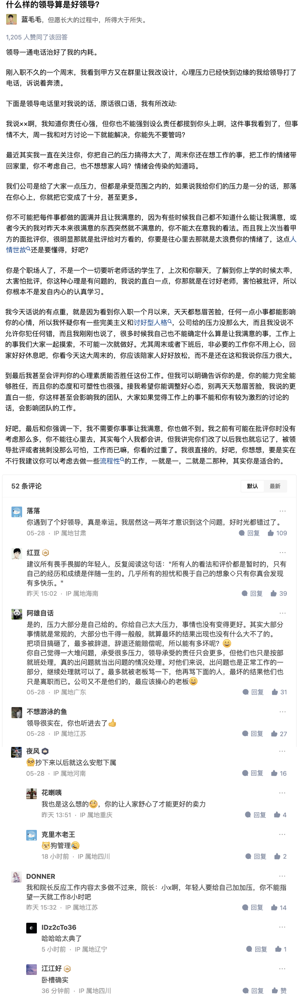

知乎职场回答1
本文最后更新于：2023年7月31日 下午
什么样的领导算是好领导？- 蓝毛毛的回答
什么样的领导算是好领导？ - 蓝毛毛的回答 - 知乎
https://www.zhihu.com/question/23421637/answer/3043774790

工作能力强的特征
有些工作能力，说起来是废话，武装起来是真香。我见过的工作能力强的人大概有的一些特征：
一，清晰的目标。
不要小看这一项，有太多人年纪轻轻就无病呻吟，伤春悲秋，敏感脆弱，迷茫无助，因为我也曾经这样，我曾经以为这是由于是环境，性格，经历等等原因，后来见过一些比较强大的人，总结出来的一点就是方向感目标感很弱。总是毫无缘由的陷入悲伤、无助的情绪中，总是好高骛远又义愤填膺，怨天尤人，总是眼高于顶又经受不住打击，一会信心爆棚，一会又垂头丧气。而那些工作能力强的人，无一不是目标清晰，而且这些目标从来不是理想主义的蓝图式目标，基本都是非常务实的小目标。目标的重要性，就像是一个人生或者工作的定海神针。只有清晰务实的目标，才能随时保证你的工作是务实可衡量的，否则你就会进入一种每天忙碌却收获微乎其微的混沌状态中。工作是一定是需要量化的。没有效果的工作，无论姿态多么投入，多么拼命，最后都是低能的标签。
二，务实的考核标准。
一个工作能力强的人，一定是非常务实的，且务实必须是他的对自身工作的考核标准，无论他的工作内容是务实还是务虚，但工作结果一定是务实的。他私下里可以单纯，但在处事上一定是现实的，不会侥幸，幼稚，天真，而是真正从社会现实出发，从各方利益着眼着手。否则就不能保证工作是有效且有速的。
三，快速判断事物本质，抓住事物主要矛盾的能力。
同样一件事，一个岗位，人跟人处理的方式不同，那些工作能力强的人，很厉害的一点便是敏锐的观察和思考能力。快速找见关键，从主要矛盾上入手，集中精力办事，即使一开始他人不适，但假以时日便出现可观效果。
四，自觉的自律。
工作能力强的人，不一定非常勤奋，但一定是在关键事情上毫不含糊，对他人狠，对自己也狠。不哀怨，不自我怜悯，干脆利落，勇于抉择，不犹犹豫豫，瞻前顾后。
五，不在乎他人非议。
凡是太迁就他人的人，成不了大事。世界上所有的事情都是轻重缓急，那种想一切都同时实现的想法既不实际又求全责备，还容易在左右权衡中丧失主动，最后赔了夫人又折兵。工作能力强的人，认定了自己的目标，就不会随意被他人的风言风语干扰，更不会被随时被道德观念绑架。
六，能屈能伸。
能力强的人，都不是太死板的人，在原则范围内，基本都是很灵活的，一些规则和教条的东西基本都不会太当个事，他们会利用各种规则和规范，善于斗争，达到自己的目标。